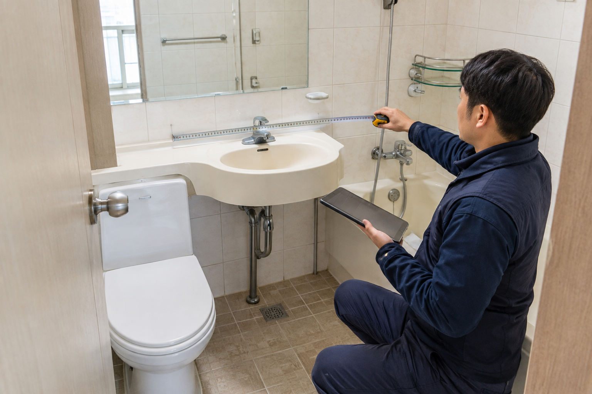
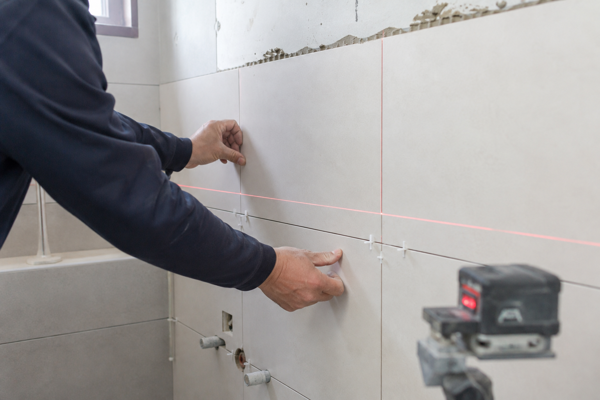

상담한 사람과
시공할 사람을 먼저 확인하세요.
집마다 조건이 다르기에 정해진 답을 먼저 권하지 않습니다. 필요한 공사와 하지 않아도 될 공사를 구분해 설명하는 것부터 시작합니다.

담당자 이미지 · 운영자 확정 후 실제 사진 교체
HOW WE WORK화려한 약속보다
화려한 약속보다
공사 범위를 분명하게.
현장을 보고 필요한 작업과 선택할 수 있는 작업을 나눠 설명합니다. 모르는 조건을 아는 것처럼 단정하지 않고, 철거 후 확인해야 하는 부분은 미리 말씀드립니다.
01필요한 범위를 분명하게
02과정을 이해하기 쉽게
03마감 후 관리까지 현실적으로
COMPANY INFORMATION운영자가 정해지면
운영자가 정해지면
실제 정보로 완성합니다.
이 페이지에는 광고 문구보다 소비자가 업체를 확인할 수 있는 사실을 우선 배치합니다. 아래 값은 최종 운영자 인터뷰 후 입력합니다.
상호운영자 확정 후 입력
대표·담당자실명과 실제 현장 사진
경력실제 작업 시작 연도 기준
주 시공 지역실제 이동 가능한 지역
제공 공종직접 시공과 협력 공정 구분
상담 시간실제 응답 가능한 시간
사업자 정보등록번호와 소재지 입력
사례 블로그운영자 본인의 네이버 블로그
검증되지 않은 ‘지역 1위’, ‘하자 0%’, ‘평생 A/S’, ‘누적 수천 건’ 등의 표현은 사용하지 않습니다.
누가, 어디서, 어떤 범위까지
일하는지 숨기지 않습니다.
담당자 실명과 연락처
실제 시공 가능 지역
직접·협력 공정 구분
본인 블로그 사례 원문
공사할 사람과 먼저 이야기해 보세요.
사진과 지역을 보내주시면 가능한 범위부터 안내합니다.